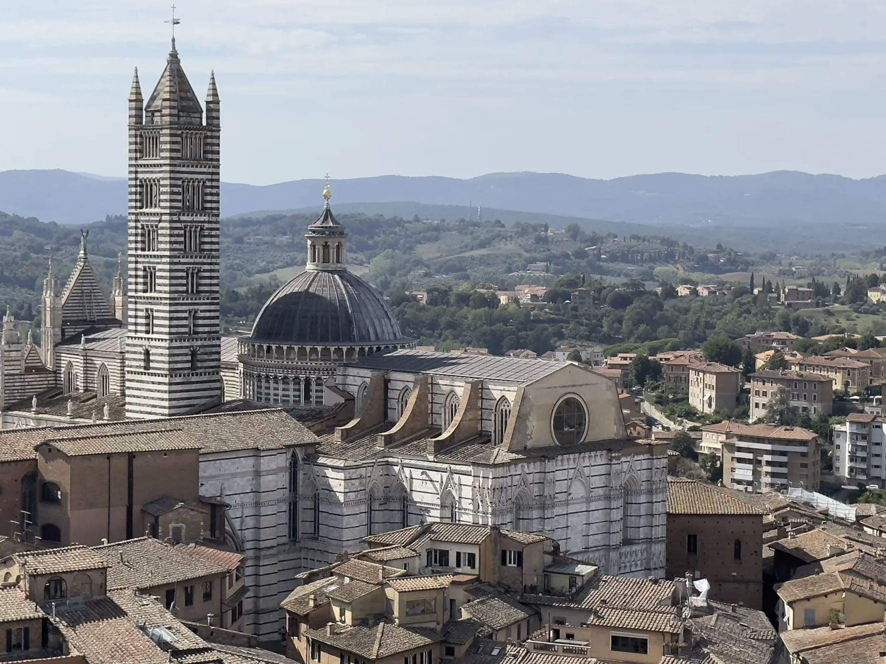
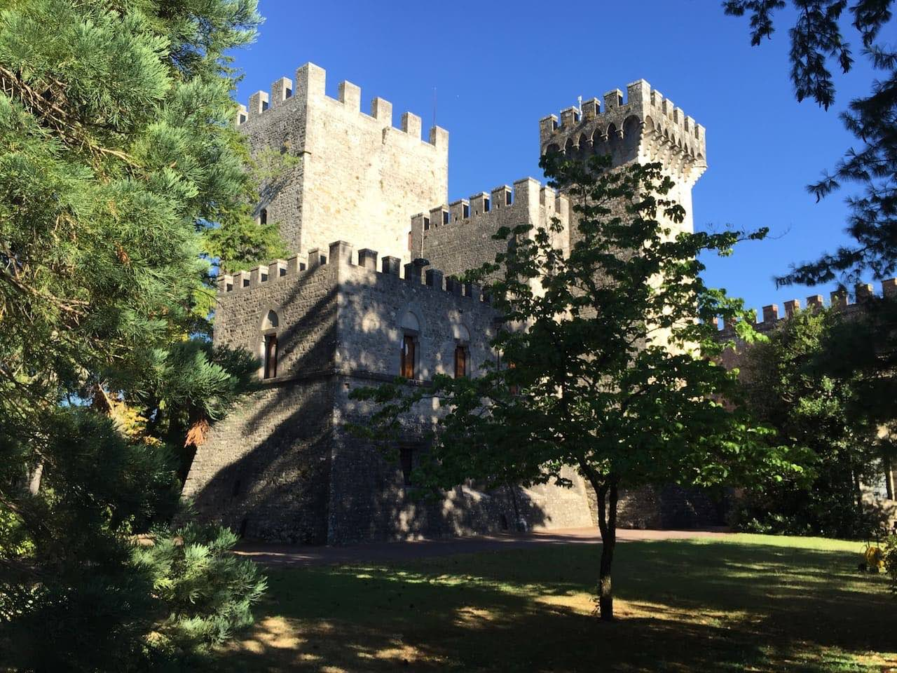
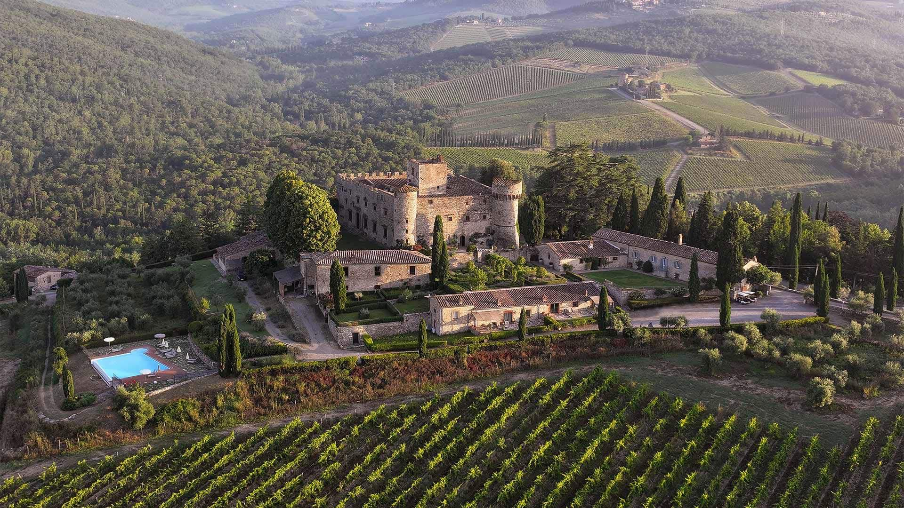
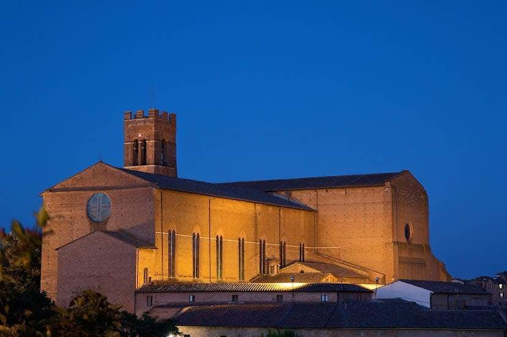

Siena to miasto, które zatrzymało się w czasie średniowiecza. Wewnątrz Katedry w Sienie (Duomo) czeka na Was jeden z najpiękniejszych skarbów sztuki – unikalna posadzka mozaikowa, którą podziwiać można tylko przez kilka tygodni w roku. Wnętrze świątyni, łączące czarne i białe pasy marmuru, tworzy niesamowity efekt wizualny, który nie ma odpowiednika w żadnym innym kościele na świecie.
Wewnątrz katedry znajduje się również Libreria Piccolomini, której ściany są w całości pokryte żywymi, kolorowymi freskami Pinturicchia. Te dzieła sztuki, zachowane w idealnym stanie, wyglądają jakby zostały namalowane wczoraj, przenosząc odwiedzających prosto w centrum renesansowych opowieści.
Symbol Sieny, Palazzo Pubblico, to miejsce, gdzie historia polityczna miesza się ze sztuką. Wewnątrz legendarnej Sala dei Nove możecie zobaczyć freski Ambrogia Lorenzettiego przedstawiające „Alegorię Dobrych i Złych Rządów”. To niesamowity wgląd w to, jak mieszkańcy XIV wieku postrzegali sprawiedliwość i ład społeczny wewnątrz murów swojego miasta.
Dla tych, którzy nie boją się wysiłku, wejście na Torre del Mangia jest obowiązkowe. Wewnątrz wąskich schodów prowadzących na szczyt można poczuć ciężar historii, a widok, który rozpościera się z góry na muszlowaty kształt Piazza del Campo, pozwala w pełni docenić unikalną urbanistykę Sieny. To serce miasta, które bije mocniej wewnątrz każdego zaułka.




Czas przejścia: 54 min (3.5 km)